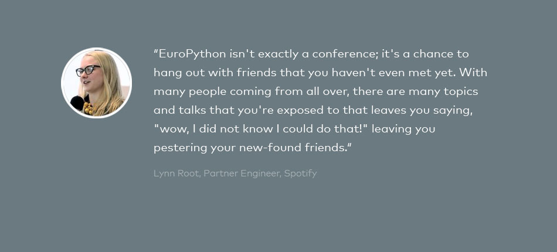

Plone - the broken parts - a non-pythonic programming model
This is a loose series of blog posts about parts of Plone that I consider as broken from the prospective of a programmer. The blog entries are based on personal experiences with Plone over the last few months collected in new Plone 4.3 projects and some legacy projects but they also reflect experienced learned from other non-core Plone developers involved in these projects (developers on the customer side).

Archetypes served for than ten years as framework for building content-types in Plone. Dexterity had been designed as successor of Archetypes with the goal making the content-types development within Plone more easy with less boilerplate. Content-type development should become be more pythonic. Creating a new of a content-type in Plone in a "pythonic way" would look like this:
obj = plone.api.content.create(some_type) obj.id = 'foo' obj.title = u'hello world' obj.start_time = datetime(...)
This approach is in general working as long as all data are stored directly as attributes on the object itself. However there is a problem with the introduction of Dexterity behaviors. Behaviors can implement different storage strategies other than the standard attribute storage. So if a content-type is composed of several behaviors it is not legitimate to read and write object attributes directly that are introduced and managed by a behavior. With many behaviors you need to know which field comes from which behavior exactly. So your code may look like this:
obj = plone.api.content.create(some_type)
adapter1 = IBehavior1(obj)
adapter1.field1 = ...
adapter1.field2 = ...
adapter2 = IBehavior2(obj)
adapter2.field3 = ...
You see the problem that this code is no longer pythonic. It exposes the Zope Component Architecture for simple object modifications to a degree that appears wild to non-core Plone developers. It is getting more scary when you need to call a content-type functionality for performing some internal processing like it is needed in plone.app.event:
from plone.app.event.dx.behaviors import data_postprocessing
from plone.app.event.dx.behaviors import IEventBasic
event = plone.api.content.create('Event')
adapter = IEventBasic(event)
adapter.start = datetime(..)
adapter.end = datetime(..)
data_postprocessing(obj, None)
This is no the point where we have a communication problem teaching Plone and Dexterity development to average developers. Such a programming model can not be taught to non-Plone people. Most people scratched their head and called what-the-fuck!?
Related topic: hooks and event subscribers. Archetypes offered a bunch of hooks (good or bad) in order to provide additional functionality inside the content-types implementation without needing to hack for example the auto-generated forms for view + edit. E.g. at_post_edit_script() could be used to perform arbitrary actions after submitting the edit form. The ZCA-ish approach are event subscribers where you can register arbitrary methods and handler for various life cycle events. This concept is in general a nice solution if you want to add external behavior to existing (3rd party code) without modifying the actual implementation. But with Dexterity this is also the only solution for hooking your own additional functionality into your own content-type.
Example: in zopyx.existdb we need to push some information from the Dexterity content-type after saving the data in Plone to a different system. This is a core functionality of the content-type we are implementing - it is not business logic, it is core functionality and therefore it should be able to implement this directly inside the content-type. Not possible with Dexterity right now. Instead the related code must be moved into an event subscriber outside the scope of the content-type implementation although it belongs to the core implementation. The result is scattered code that actually belongs together into one class. From the prospective of reading code and understanding the programming logic this is not desirable. So in the current programming model you end of with code that belongs to a particular content-type spread over the content-type class, event subscribers and browser views. So there is really a need for having a way to implement hooks in a reasonable way in the scope of the content-type class without explicit event subscribers.
Plone - the broken parts - Member schema extenders and plone.api
This is a loose series of blog posts about parts of Plone that I consider as broken from the prospective of a programmer. The blog entries are based on personal experiences with Plone over the last few months collected in new Plone 4.3 projects and some legacy projects but they also reflect experienced learned from other non-core Plone developers involved in these projects (developers on the customer side).

It is a common project requirement to extend the Plone user memberdata schema. The common approach is perhaps documented here (https://pypi.python.org/pypi/collective.examples.userdata). The additional fields of the memberdata must be defined as a zope.schema. Nothing special - same as definining forms using z3c.form or writing content-types with Dexterity. In a recent project we had a working memberdata extender and had to extend it with two schema.List fields. Both fields were added to the schema together with the following (working) adapter implementation:
from plone.app.users.browser.personalpreferences import UserDataPanelAdapter
class EnhancedUserDataPanelAdapter(UserDataPanelAdapter):
""" Adapter for extended user schema """
def __init__(self, context):
super(EnhancedUserDataPanelAdapter, self).__init__(context)
self.add_property('academic')
self.add_property('gender')
self.add_property('phone')
self.add_property('academic')
self.add_property('expertise')
self.add_property('title')
self.add_property('firstname')
self.add_property('lastname')
self.add_property('position')
self.add_property('phone')
self.add_property('db_projects')
self.add_property('specialties')
self.add_property('institution')
self.add_property('institution_location')
self.add_property('memberships')
self.add_property('projects')
self.add_property('gender')
self.add_property('birthday')
self.add_property('cooperation_interests')
self.add_property('locations')
def add_property(self, name, value=None):
fget = lambda self: self._get_property(name)
fset = lambda self, value: self._set_property(name, value)
setattr(self.__class__, name, property(fget, fset))
setattr(self, '_' + name, value)
def _set_property(self, name, value):
return self.context.setMemberProperties({name: value})
def _get_property(self, name):
return self.context.getProperty(name, None)
After restarting Plone, the @@user-information view crashed directly with the following non-speaking traceback:
Module ZPublisher.Publish, line 138, in publish
Module ZPublisher.mapply, line 77, in mapply
Module ZPublisher.Publish, line 48, in call_object
Module zope.formlib.form, line 795, in __call__
Module five.formlib.formbase, line 50, in update
Module zope.formlib.form, line 758, in update
Module plone.fieldsets.form, line 30, in setUpWidgets
Module zope.formlib.form, line 402, in setUpEditWidgets
Module zope.formlib.form, line 332, in _createWidget
Module zope.component._api, line 107, in getMultiAdapter
Module zope.component._api, line 120, in queryMultiAdapter
Module zope.component.registry, line 238, in queryMultiAdapter
Module zope.interface.adapter, line 532, in queryMultiAdapter
Module zope.component.security, line 77, in factory
Module zope.formlib.itemswidgets, line 52, in CollectionInputWidget
Module zope.component._api, line 109, in getMultiAdapter
ComponentLookupError: ((, None, ), , u'')
What is the problem here from the programmer's prospective: no information about the real problem, no information about the schema field causing the problem. Further investigations using the Python debugger then showed that the problem is related to the two new schema.List fields. "Related" means that we still don't know the reason for the real problem after two or three hours debugging with two persons. Bad programmer experience because we do not get reasonable information from the underlaying view or call it user-information subsystem.
What makes the memberdata extension mechanism even more complicated:
- exposure of many ZCA related magic or explicit configuration to the programmer
- the programmer still needs to care about additional boilerplate like the adapter implementation
- the programmer still needs to care about the memberdata_schema.xml file
- plone.api.user.get_permissions() returns a list of all permissions granted to a user (on a particular object). The common usecase is that you want to check one particular permission. The "old" user.has_permission(permission, context) API is more closely to real usecases than the implemented functionality of plone.api.
- plone.api.user.get() claims to return the current user object. This is true as long as the user is defined within the context of the Plone site. The method raises an exception for users defined on the Zope root level. You might argue that this an intentional behavior - possibly it is intential but in reality I find this method completely unusable because some code parts are possibly called by site administrators and Zope manager accounts. In both case I want the same code to work with one way to retrieve the current user instead having to provide fallback code for dealing with non-Plone users accounts.

Since some years we maintain the Onkopedia site, a medical portal with guidelines in the field of hematology and medical oncology.
The simplified workflow is like this:
- authors (doctors) write their guidelines in Word
- an internal editorial process brings the Word document in shape and checks the documents for consistency and for some style-guide compliance
- we can convert the Word documents to XHTML/CSS using OpenOffice/LibreOffice
- we generate PDF from XHTML/CSS based on a CSS3 Paged Media workflow and publish the PDF documents together with a HTML version on the web through Plone
- hierarchial storage model like Plone/ZODB with collections and subcollections
- indexes HTML/XML out-of-the-box
- stores arbitrary binary data
- support for the most recent XML technologies like latest XSLT and XQuery versions
- various web-service APIs: WebDAV, REST, HTTP, RESTXQ...
- easily approachable and easy to use
- open-source and a smart and helpful community
For the integration of Plone with eXist-db we wrote a small Dexterity-based connector to eXist-db (package zopyx.existdb).
The functionality is similar to the old Reflecto product for mounting a local filesystem into Plone.
The connector provides the following functionality:
- mounts an arbitary eXist-db collection into Plone
- traversal support for traversing by path into subcollections
- indexing support (limited to one content document per Connector instance)
- pluggable API for custom views
- ACE editor integration
- ZIP export from eXist-db
- ZIP import into eXist-db
- preliminary API for calling arbitrary XQuery scripts from Plone
Right now we access content stored within the XML database through the WebDAV layer of eXist-db. A major relief is the Python pyfilesystem module that abstracts the filesystem layer (local, WebDAV, SFTP, HTTP, ZIP etc.) through a uniform API. You can read and write to ZIP files and WebDAV directories using the same method. This is a huge advantage because you can easily reconfigure your filesystems or underlaying storage layer easily by changing the URLs of the related systems - this real transparency .

We are happy to announce the availability of the EuroPython 2014 schedule containing the dates and times for trainings, talks and sprints.
If you want to participate in a training then you have to register for this particular training on the training detail page. Every training is limited to 70 participants. All trainings seats are available on a first-come first-served basis. So please register your training participation in advance and as early as possible.
The schedule will see future updates related to EuroPython side events, sponsored talks, talk cancellations etc.
This is a short reminder that the regular ticket sale for standard EuroPython 2014 tickets ends on 23/06/2014.
After 23/06/2014 you can only purchase tickets for the (higher) on-desk rate.
So hurry up.

It's done.
It only took almost 18 months to move all of my company and personal sites into one Plone version with one look & feel.
- www.zopyx.com
- www.zopyx.de
- www.produce-and-publish.com
- www.produce-and-publish.de
- www.andreas-jung.com
- www.andreas-jung.com/blog
I apologize for another Plone rant but the following issue costed my some nerves and customer money.
We are currently leading a large Plone 2 -> Plone 4.3 + Dexterity project and we are using plone.app.event.
According to every documentation and knowledge about Dexterity we created our events in our migration script using
event = invokeFactory('Event', ..)
event.start = datetime(....)
event.end = datetime(...)
We all learned that you can set/get the value of a content-type directly through attribute access. Unfortunately those events resulted in a broken view.
It turned out that you can not modify the start and end properties of an Event instance directly but instead you have modify then through a behavior:
from plone.event.interfaces import IEventAccessor
acc = IEventAccessor(event)
acc.start = DateTime()
acc.end = DateTime()
But how bad is this? First, no documentation but much more worse: do I have for every single content-type and for every property the way how to modify it? Do I need to figure out if access attribute is the way to go or some other way (like through the behavior interface)? This approach is completely absurd. It is completely absurd for 1.X release. It is completely absurd having to teach this people developing with Plone without in-depth background. Wasn't Dexterity invented with the goal for making programming content-types in Plone much easier? Now this!? You guys are serious?
We just earned a larger Plone 4.0 project where the majority of the code appeared in a very bad shape - basically a summary of all coding mistakes you could do. While trying to migrated the codebase to Plone 4.2.6 we figured out that rendering a simple read-only view of an Archetypes based content-type caused a ZODB write operation of 3-4 KB each time. Inspecting the code of the content class did not directly reveal any pointer to the problem. The methods called during the rendering of the 'view' view did not assign to 'self' - so there was no obvious reason for any badly written code. But how to track this down?
A good start is the troubleshooting section of the Plone documentation - in particular the usage of the debug.py script at the end of the page. Looking at the latest transaction of the ZODB showed us that the transaction is really caused by the 'Artikel' content-type that made us suspicious. But the output of debug.py did not reveal which attributes of the persistent 'Artikel' instance really changed.
The solution is to look into the __setattr__() calls of the related object. So I added a custom __setattr_() implementation to the content-type 'Artikel':
class Artikel(ATDocument):
def __setattr__(self, k, v):
print k,v
return super(Artikel, self).__setattr__(k, v)
This __setattr_() implementation would be called for every change of an attribute on the 'Artikel' instance. Re-running the instance and re-rendering the object produced the following output:
_p_serial ���:S��
_p_estimated_size 3634
__provides__ <zope.interface.Provides object at 0x7f150caad490>
__provides__ <zope.interface.Provides object at 0x7f150caad490>
_p_serial ��v(w
_p_estimated_size 3301
The _p_ attributes are internal attributes used by the ZODB - they appeared normal however there were also changes to the __provides__ attribute of the instance. This happens usually when you attach a marker interface to a persistent object using alsoProvides(). So we grepped through the code and found this:
def get_average_rating(self):
alsoProvides(self, IUserRatable)
adapted = IUserRating(self)
return adapted.averageRating
def get_rating_count(self):
alsoProvides(self, IUserRatable)
adapted = IUserRating(self)
return adapted.numberOfRatings
Both methods are called during the rendering of the 'view' view and with every call it re-attaches/modifies the IUserRatable interface to the instance of the Artikel.....BAD BAD BAD.....moving the code to a place where is is called only once per object resolved the issue and the ZODB bloat.
EuroPython 2014: Early Bird ticket sale starts on Wednesday, 05/02/2014
A limited number of EuroPython 2014 tickets will be available from Wednesday on for a reduced price.
We are pleased to announce that the EuroPython 2014 ticket sale will start next Wednesday, 05/02/2014 with the Early Bird ticket phase.
There is a contingent of 300 tickets that will be sold to a reduced price in three categories:
- Business
- Personal
- Student
If you are a student and want to get the student discount, please email a copy of your student identity card to helpdesk@europython.eu once the sale has started.
An email prior the to sale start will not be considered. The requests will be processed in the order they are received.